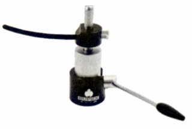
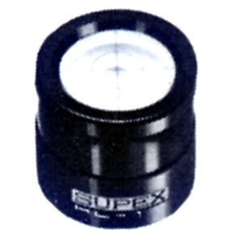
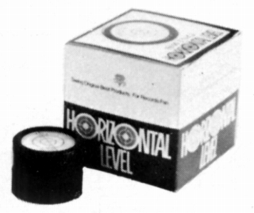
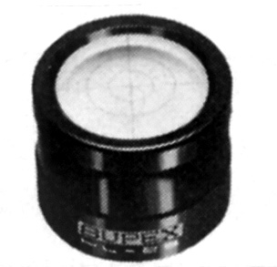
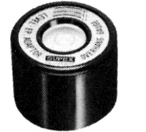
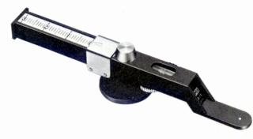
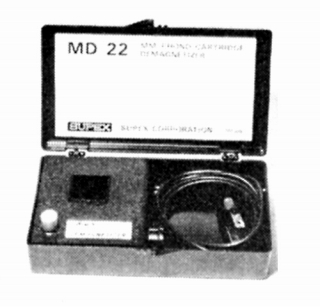
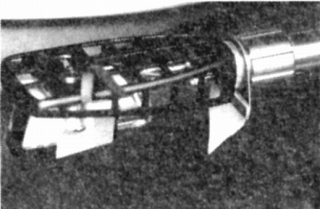
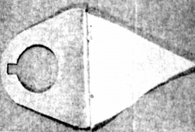

その他の製品
�@アームリフター
AL-2

■価格 2,300円
■備考 ユニバーサル型。オイルダンプ式。
�A水準器
HL-26

■価格 2,200円
■備考 「スウィング」の「水準器」と同じものと思われる。

（「スウィング」の「水準器」）
HL-17

■価格 1,700円
■備考
HL-20EP

■価格 2,200円
■備考 EPアダプター兼用。
�B針圧計
PG-1

■価格 3,500円
■備考 シーソ型
測定範囲 0.1〜3.0g
�Cカートリッジ・ディマグネタイザー
MD-22

■価格 7,500円
■備考 基本的にMM型用。
�D帯電防止布
AC-15

■価格 700円
■備考 シェルに取り付ける帯電防止布。
「スウィング」の「デリート」と同じものと思われる。

（「スウィング」の「デリート」）
1990年代では2,100円との情報もある。
スペックスのインデックスへ